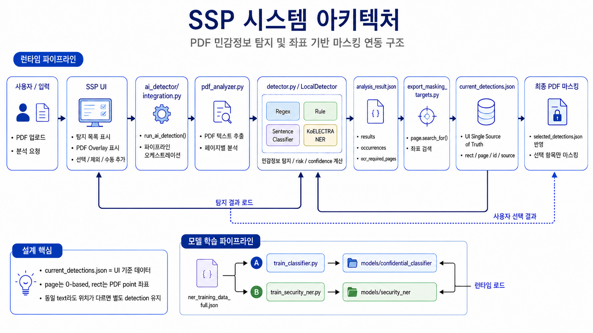

마스킹 처리의 허점
민감 정보를 단순 가림 처리 후 외부 공유하면 복사/붙여넣기 과정에서 원본 텍스트가 노출될 수 있습니다.
SSP - Safe Share PDF
2026. 06. 26
Contents
01. 프로젝트 개요
02. 제안 배경
민감 정보를 단순 가림 처리 후 외부 공유하면 복사/붙여넣기 과정에서 원본 텍스트가 노출될 수 있습니다.
PDF 내부 Metadata 정보가 잔존하거나 Hidden text 레이어가 유지될 수 있습니다.
기업 문서와 정부 기관 자료에서 기업 기밀 및 민감정보 유출 사례가 확인되었습니다.
02. 제안 배경
법원 제출 PDF 문서를 검은 박스 처리 후 공개했지만 Copy & Paste만으로 원문이 그대로 노출되었습니다.
핵잠수함 관련 PDF 문서를 텍스트 레이어 제거 없이 배포하여 기밀 정보가 노출되었습니다.
DS 부문에서 챗GPT에 내부 정보, 설비 계측 소스 코드 및 회의 내용이 입력된 사례입니다.
03. 기존 보안의 한계
접근 권한 제어 중심 구조로 화면 촬영 등 우회가 가능하고, 접근 허용 이후 대응이 제한됩니다.
규칙 기반 탐지 방식으로 운영되어 문맥 및 의미 기반 분석에 한계가 있고 비정형 데이터 탐지가 어렵습니다.
화면상 마스킹 중심 처리로 OCR 레이어, Metadata, 숨겨진 데이터 복구 위험이 남을 수 있습니다.
03. 기존 보안의 한계
알PDF 등 기존 도구의 마스킹 처리 한계를 보여주는 시연 영상입니다.
03. 기존 보안의 한계
Dangerzone 등 기존 방식과 PDF 처리 결과를 비교하는 시연 영상입니다.
04. 해결 방안
개인정보 및 민감정보를 자동 분석하고 이름, 연락처, 계좌번호 등 주요 정보를 탐지합니다.
단순 가림 처리가 아닌 실제 데이터 제거를 수행하고 Metadata 및 숨겨진 정보까지 제거합니다.
외부 공유용 안전 PDF 파일을 자동 생성해 문서 공유 환경 보안을 강화합니다.
04. 해결 방안
04. 해결 방안
NER 기반 식별 결과를 통해 문장 속 개체를 탐지하고 마스킹 텍스트와 신뢰도를 함께 제공합니다.

04. 해결 방안
핵심은 단순 오버레이가 아니라 원문 제거, 길이 보존형 마스킹, 문자열 치환을 함께 수행하는 보안 처리입니다.

05. 모델 설명
05. 모델 설명
05. 모델 설명
05. 모델 설명
05. 모델 설명
문서의 메타데이터와 민감정보를 함께 제거하여 잔존 가능성을 최소화합니다.
단순 키워드 검색이 아닌 문장의 의미와 맥락을 분석해 개인정보와 민감정보를 더 정확하게 탐지합니다.
사용자가 직접 찾을 필요 없이 AI가 자동으로 민감정보를 탐지해 검토 시간을 단축합니다.
05. 모델 설명
계약서, 업무 문서, 내부 보고서는 기관과 기업마다 작성 양식과 표현 방식이 달라 모든 표현을 일반화하기 어렵습니다.
텍스트 레이어, 줄바꿈, 표 구조, 스캔 여부에 따라 입력 단위가 달라지고 모델 결과에도 영향을 줄 수 있습니다.
06. 기대 효과
Thank You